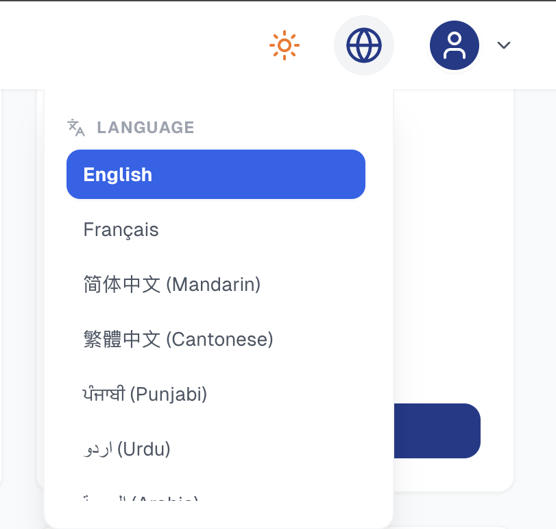
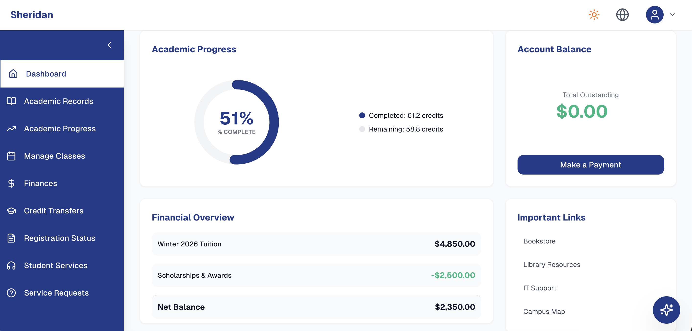
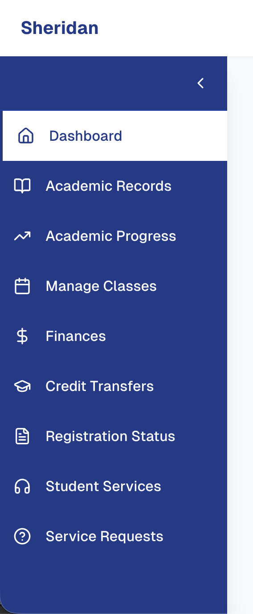
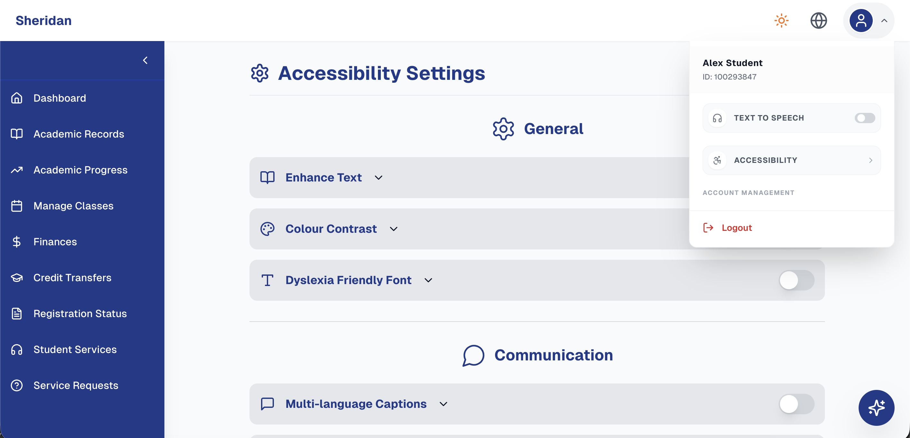
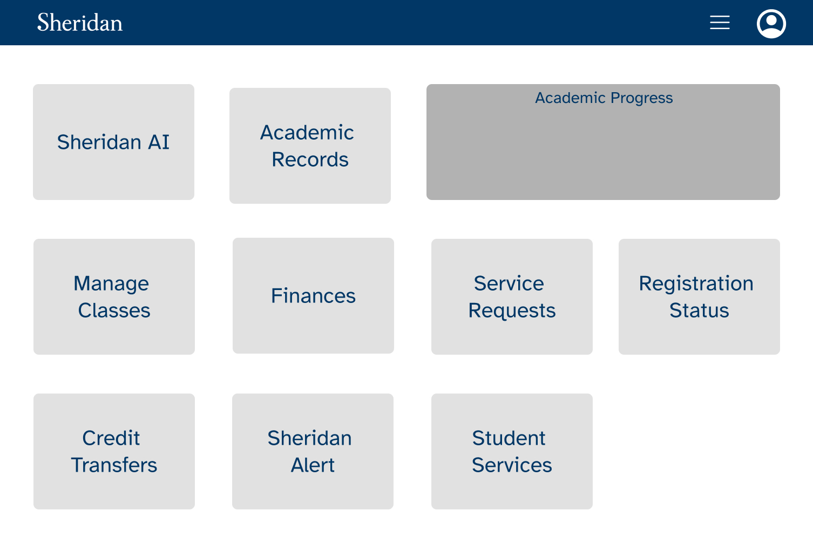
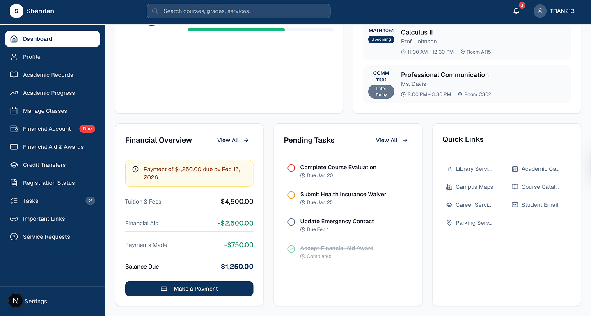
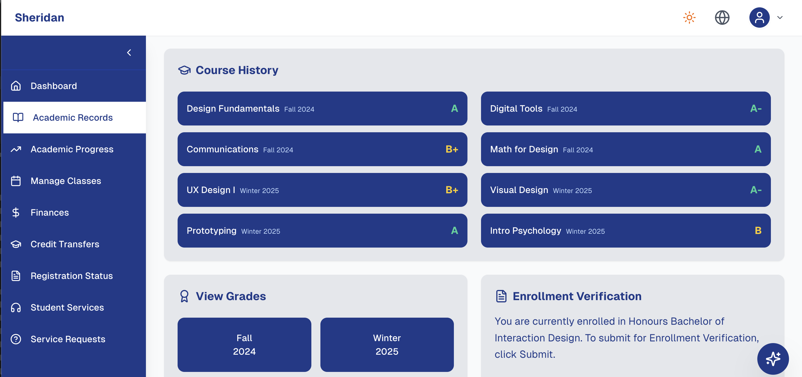
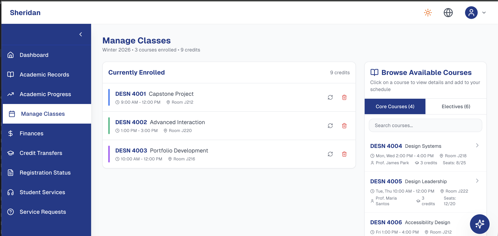

01 | OVERVIEW
For Hackville 2026, our team explored a redesign of Sheridan's MyStudentCentre, focusing on usability, accessibility, and clearer navigation.
Our goal was to make the student portal easier to navigate, helping students find information and access important services with less frustration.
02 | PROBLEM
“How might we make Sheridan's MyStudentCentre more accessible and intuitive, helping students with different accessibility needs find important information and navigate the platform with less confusion?”
03 | RESEARCH & ACCESSIBILITY
The challenge for Hackville 2026 was to design for accessibility.
With only 24 hours to work, our team of four focused on identifying
the biggest accessibility barriers in Sheridan's MyStudentCentre.
We worked to explore ways to make the platform easier to use. From our
own personal experiences and discussions with other users, we identified
many issues with the website.
Discover & Define
While reviewing MyStudentCentre, we noted how
overwhelming the platform felt.
Important and significant information
was surrounded by confusing
elements, and it was hard to identify what
students had to do.

Accessible Language Options
We have some of the most used languages in the world to
help students access necessary information.
We hope to include more languages in the future.
We have English and French, Canada's national languages.
We also explored language options beyond English and French,
making the interface more approachable for students who prefer
using another language.
04 | DESIGN DECISIONS
Based on the challenges we identified, we focused on three design priorities: simplifying the dashboard, improving navigation, and giving students more control over their settings.

Dashboard
We put the most important information into the dashboard, including
academic progress and finances.
We grouped everything into clear categories and added quick-access
links to help students locate important pages.

Navigation
We noticed that important information in the original
MyStudentCentre was scattered across different pages.
To fix this, we organized all related services into
clearly labelled categories within a consistent sidebar,
allowing students to understand what to do and where to go next,
with less guesswork.
We included quick-access links to make frequently
used resources easier to find.

Accessibility Settings
We researched different accessibility needs students may have
including visual, cognitive, motor, and language.
We decided to design a dedicated accessibility
page with general, cognitive and communicative options.
We explored text-to-speech, dark mode, light mode and multilingual
captions to provide alternative accessible ways of pulling
academic information.
Our goal was to give students the most control over
their experience, while allowing the interface to
adapt to their needs. This is a website for students, it
should be as accessible for them as possible.
05 | WIREFRAMES & ITERATIONS
Our Hackville 2026 team consisted of two
designers and two developers. As one of the two designers, we were
responsible for developing the interface in Figma.
During these 24 hours, we wanted to simplify the
website's structure, while exploring ways to make
the platform more accessible.
First Wireframes
We began by seeing which academic information
was most important and put them into clear sections.
Our early wireframes were very basic.
Which features should be grouped together
and which ones would reduce information overload?

Second Wireframe Designs
We wanted this redesign to be recognizable
to Sheridan students and not introducing
a new unrecognizable design.
In our second year of IxD, we
learned the best way to approach accessibility for users in
our class Usability for IxD.

Branding
We used Sheridan's traditional colours (blue-and-white). The double-blues and the white background separates the content and makes important information easier to scan!
Typography
We decided to use a sans-serif hierarchy for
readability purposes. Sans-serif typefaces are easier
to read on digital screens, which are ideal for web design.
Due to the fact that students use this portal to review
important information, we wanted the
typography to be straightforward.
Academic Progress
Your Academic Overview
View completed credits, remaining courses, and your progress toward graduation.
Implementing Accessible Options
We designed a dedicated accessibility page organized into three categories:
-
General
- Enhanced Text
- Colour Contrast
- Dyslexia-Friendly Fonts
- Dark Mode
-
Communication
- Multilingual Captions
- Text-to-Speech
- Concise English Mode
-
Cognitive & Focus
- Step-by-Step Guidance
- Reduced Visuals
06 | FINAL PRODUCT
StudentHub is our team's redesigned concept for Sheridan's MyStudentCentre. The final prototype combines clearer navigation, organized academic information, and customizable accessibility options.
Our design gives students many new accessible ways to customize how they interact with the platform.

